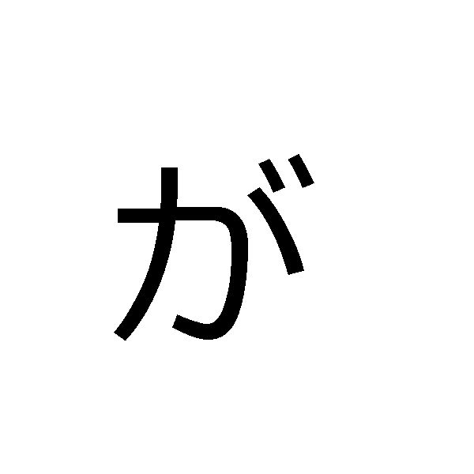
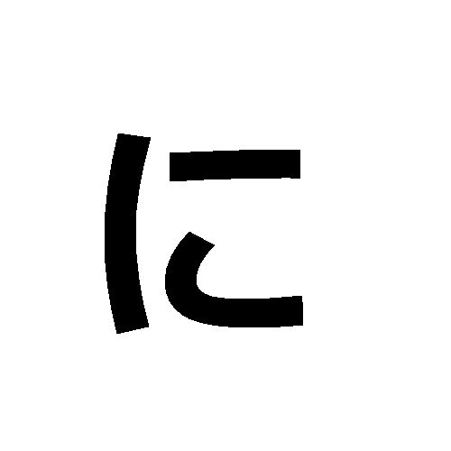
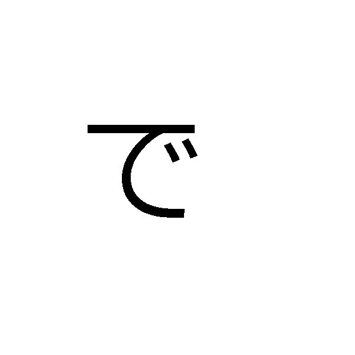

Lección 4: Partículas básicas
は (wa): Indica el tema de la oración.
が (ga): Indica el sujeto.

を (wo): Indica el objeto directo.
に / へ (ni / e): Dirección o destino.

で (de): Lugar donde ocurre una acción.
